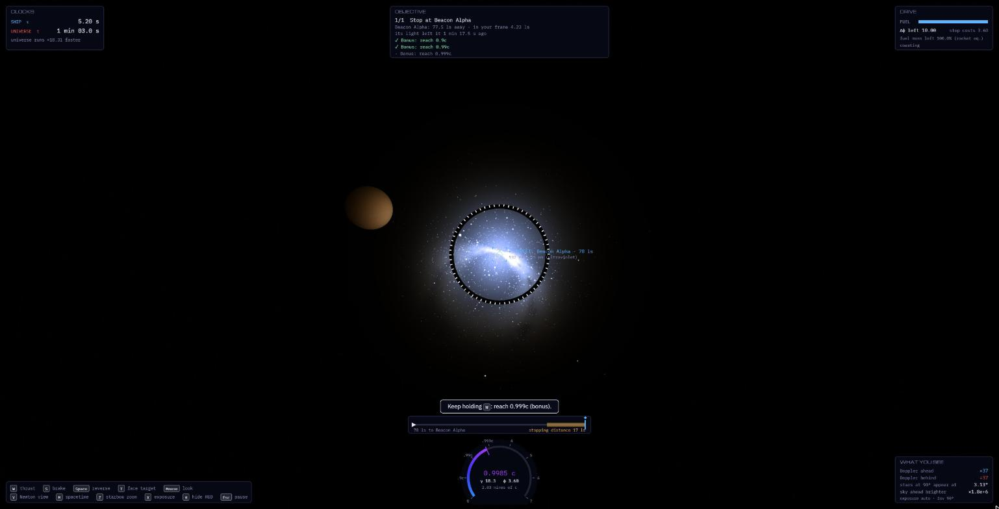

Cockpit flight · 4 missions · prototype
Proper Time
Pilot a courier at 0.9999c from the cockpit. Watch the sky squeeze into a starbow, beacons shift out of sight, and your twin age an hour while you age a minute. Keyboard and mouse.
Play →